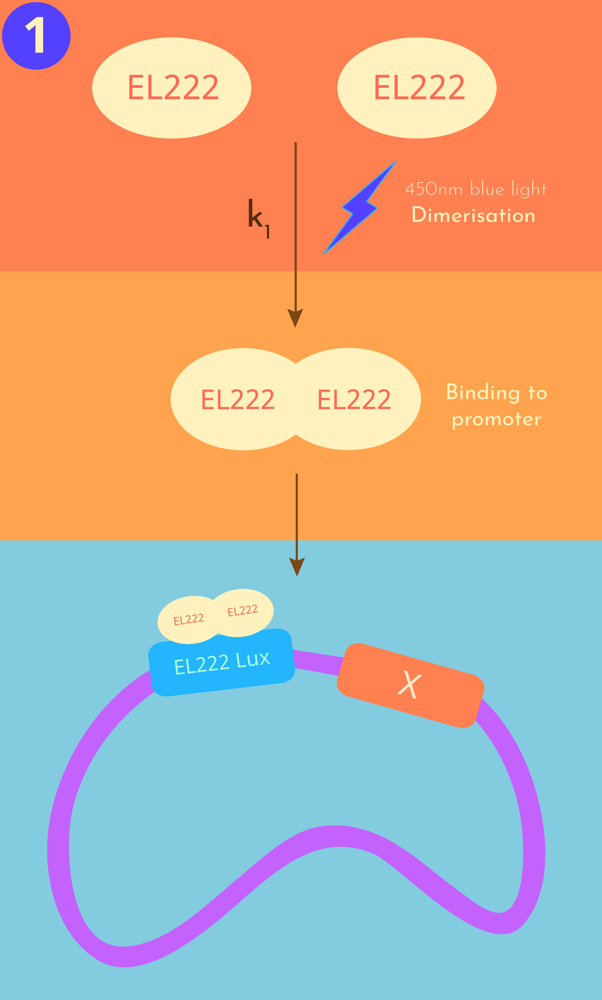
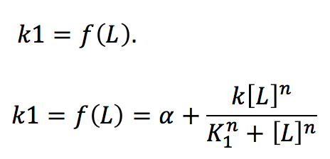
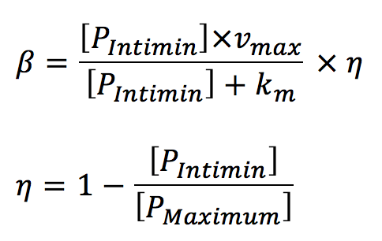
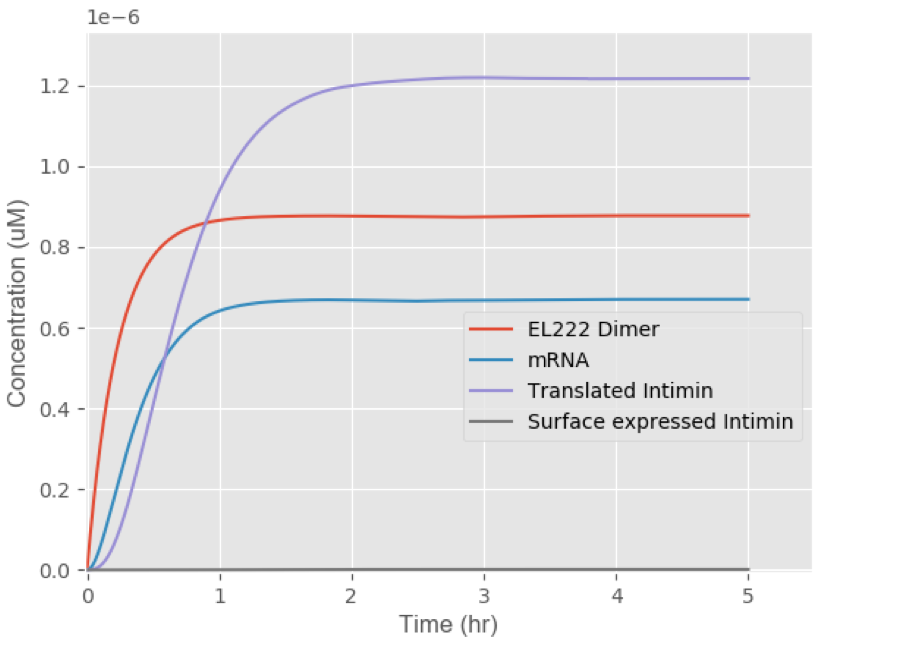

- With this Model we wanted to
‘LEGIT: From light to barchitecture’
A mathematical model of how E. Coli cells form structures.
Legend
EM = EL222 monomer
ED = EL222 dimer
PrLuxI = LuxI Promoter
PrLuxI+ED = EL222 dimer bound to the promoter
PIntimin = Intimin protein in the cytoplasm
PSurface = Intimin protein on the cell surface
The Science behind LEGIT

LEGIT models the light activated expression of theh surface protein intimin. Our model takes on an innovative twist as it simulates the effect of light as an inducer and models the transmembrane transport of the intimin protein.
Scroll down for more details!
Light activation
 Step 1: Activation, dimerization and binding of our Transcription Factor (EL222) to the LuxI promoter
location cellular mechanism takes place in: Cytoplasm
The first stage of our simulation is the photo-initiated dimerization of two EL222 monomers (EL222Monomer) to produce an active EL222 dimer (EL222Dimer), bound to the LuxI promoter.
The photoactivation is dependent on light intensity (L)

We decided to adapt the Hill equation in order to evaluate the effect different light intensities have on the rate of photoactivation. The Hill equation is commonly used to fit inducible promoter genetic circuits
Transcription
Step 2: Transcription
Location cellular mechanism takes place in: Cytoplasm
Production of mRNA is dependent upon the concentration of the EL222 dimer, required to initiate transcription. Dilution by cell growth is the principal reason for which we added a term of mRNA degradation.
Translation
Step 3: Translation
Location cellular mechanism takes place in: Cytoplasm
The change in concentration of the intracellular intimin protein over time is dependent on the rate of translation of mRNA. We introduced a degradation term to represent expected degradation of intimin over time due to its dilution by cell growth.
As intimin is continuously transported to the surface of the bacteria its concentration in the cytoplasm decreases over time. Therefore, we created a function to take into consideration the transport rate of intimin to the surface of the bacterial capsule.
The transport of Intimin from the cytoplasm to the cell surface is dependent upon the spatial availability at the plasma membrane. We expect the transport rate of intimin to the membrane to slow as availability of space falls. To describe this, we adapted the Michaelis Menten equation to consider the intimin molecules already occupying the plasma membrane (PSurface), and the maximum occupancy of the plasma membrane. The variable η sets a limit for the maximum number of intimin proteins that can be expressed on the cell surface and prevents any other proteins to be expressed once that limit is reached.
Transport

Step 3: Transport of intimin to the surface of the cell
Location cellular mechanism takes place in: Surface of the bacterial capsule
The final differential equation simulates the change in concentration of intimin expressed on the surface of the cells over time. The equation considers both the rate taken for intimin to be transported to the surface and the degradation of intimin.
Not enough science? Check out the project description page!
Results
We analysed the results obtained from our model and decided to take different approaches to optimise them:
Moreover, this section displays the results of our cost analysis which evaluates the economical feasibility of our light induced technologies
Determining the rate limiting step in intimin expression
We decided to use thermodynamic modelling to simulate the cellular mechanisms involved in the expression of intimin to determine the rate limiting step.
 Fig.1 Rate of Cellular Mechanisms involved in intimin expression
Figure 1 shows the rates of each cellular mechanism involved in intimin expression. The concentration of surface protein expressed appears much lower than the concentration of species produced at the other steps involved in the process. Therefore, we plotted figure 2, which shows a close up of the rate of intimin transport to the surface of the cell.
Fig.2 The scale of the graph is re-adjusted to view the rate of the surface expression of intimin.
| Reaction | Time taken to plateau (hr) |
|---|---|
| Dimerization of EL222 | 1.3 |
| Transcription | 2.4 |
| Translation | 2.5 |
| Transpor of intimin to the surface | 3.2 |
A rate limiting step in a process is the step that takes the longest amount of time to reach its maximum value, essentially the time taken for the plot to plateau. We identified the rate at which intimin is transported to the surface of the cells as the rate limiting step in this cellular mechanism. Since the rapidity of cell adhesion is vital for LIT Barchitecture we decided to identify the rate limiting parameters within the Ordinary Differential Equation we used to describe the transport of intimin to the cell surface.
Optimisation of the rate limiting step
A focus was placed on evaluating the effect three main parameters had on the rate of intimin surface expression: Vmax, Km and Light Intensity. The maximum and minimum values that could be used for each parameter were determined from papers.